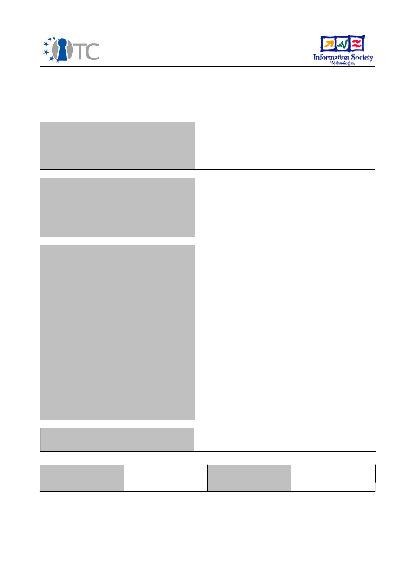
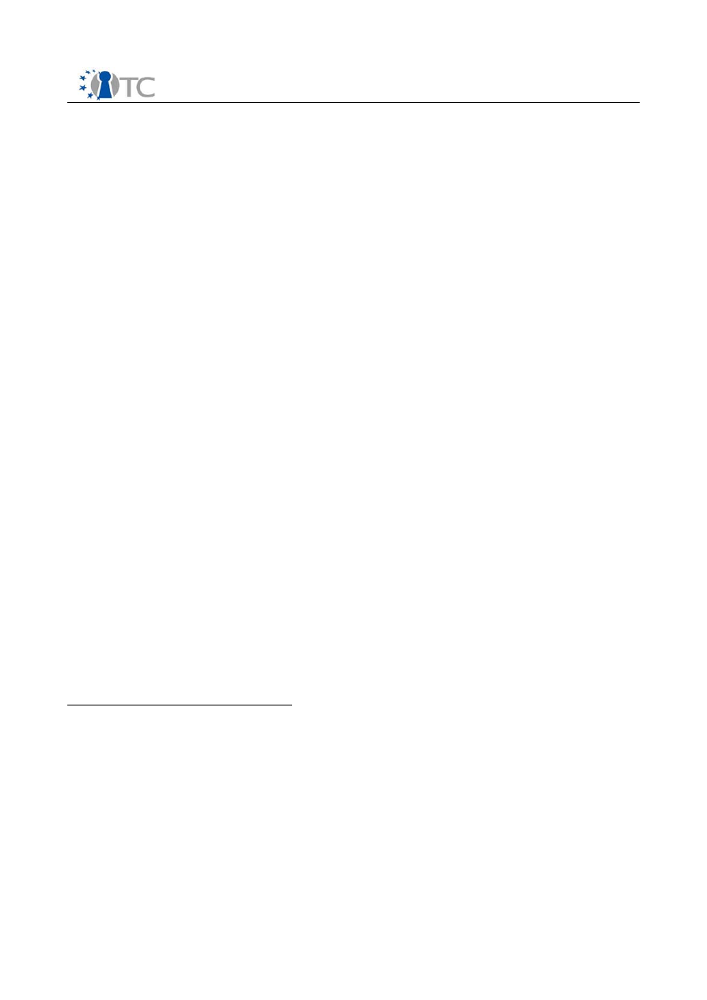
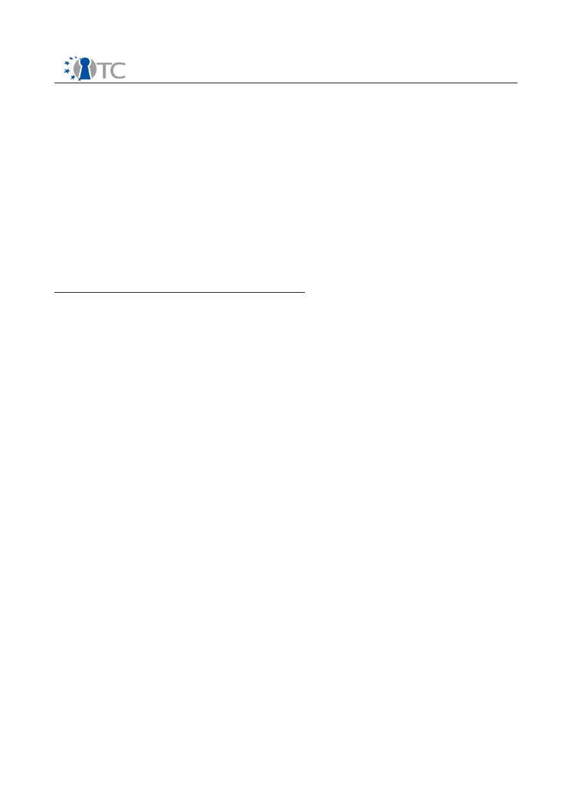
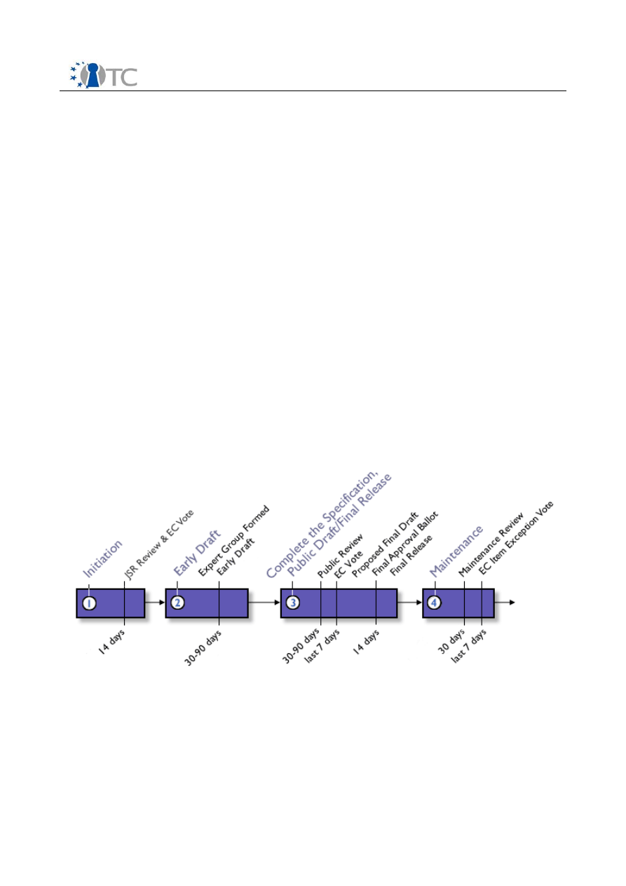
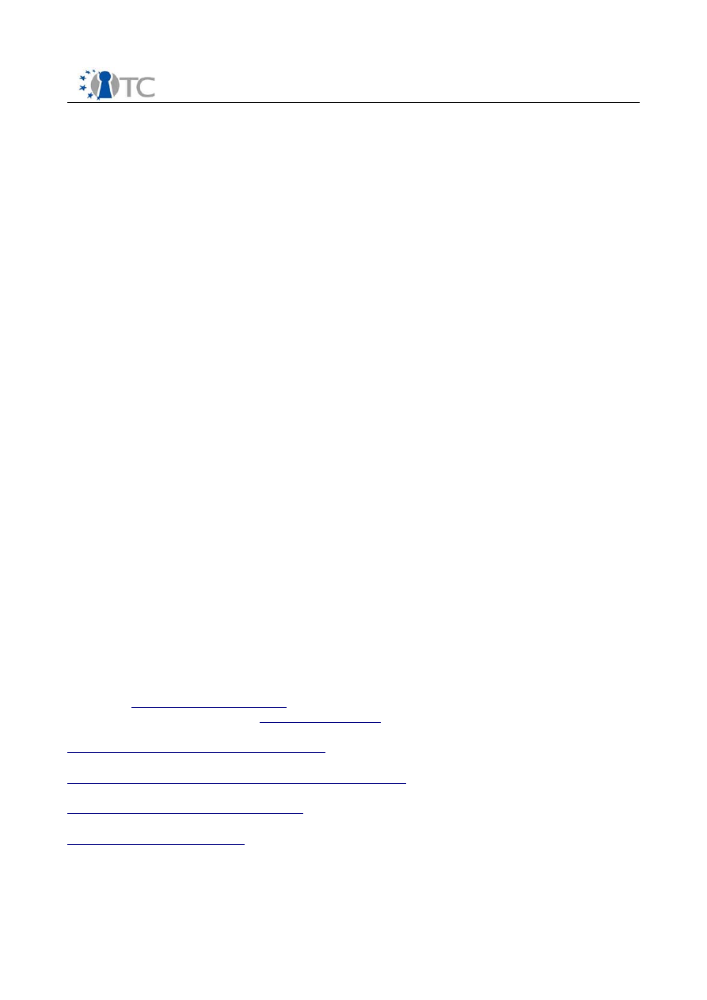
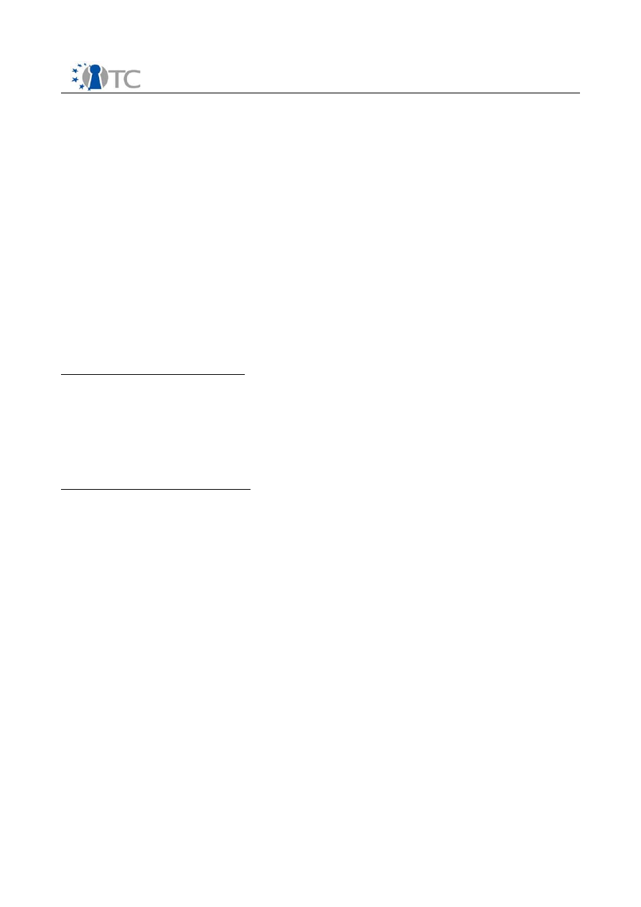

D10.8 Final Standardisation Report
Project number
IST-027635
Project acronym
Open_TC
Project title
Open Trusted Computing
Deliverable type
Report
Deliverable reference number
IST-027635/D10.8/V1.0 FINAL
Deliverable title
Final Standardisation Report
WP contributing to the deliverable
WP10
Due date
Oct 2008 – M36
Actual submission date
April 30th, 2009
Responsible Organisation
IFX
Authors
IFX (Hans Brandl)
Abstract
Standardisation is an important activity for
any new technology as it is a prerequisite for
its wide acceptance and dissemination. With
respect to Trusted Computing, the TCG has
developed the basic set of standards and
therefore many OpenTC participants are also
members of and contributing to the TCG
work. Additionally, project members
contribute to other standard activities, where
TC knowledge is useful such as: JAVA
(JSR321), OMTP, DRM, OMA, ETSI.
This report describes the main
standardisation activities of the OpenTC
project members.
Keywords
Standardisation, TCG, TSS, DRTM, DRM,
CRTM, JAVA, OMTP, OMA, ETSI, ISO
Dissemination level
Public
Revision
V1.0 Final
Instrument
IP
Start date of the
project
1
st
November 2005
Thematic Priority
IST
Duration
42 months

D10.8 Final Standardisation report
Table of Contents
1 The Trusted Computing Group ..................................................................................3
1.1 Standardisation work and contribution within the TCG........................................3
1.1.1 Workpackage 3: Standard interfaces to TC hardware........................................4
1.1.2 Workpackage 8: Mobile phone communications................................................4
1.2 Trusted computing standardisation contributions..................................................4
1.2.1 The TSS (TPM Software Stack) ..........................................................................4
1.2.2 Contributions to additional language interfaces of the TSS...............................4
1.2.3 TSS JAVA language interface.............................................................................5
1.2.4 Mobile Phone Working Group (MPWG)...............................................................5
1.2.5 Direct Anonymous Attestation (DAA) protocol...................................................5
1.2.6 Dynamic Root of Trust Measurement standard (DRTM).....................................5
1.2.7 TCG standard correction and enhancements at the ISO PAS process................6
2 JAVA Standard contributions (JSR321).......................................................................6
2.1 TSS JAVA language interface..................................................................................6
2.2 Standardisation work (JSR321: Trusted Computing API for JavaTM)......................6
3 Wireless standard activities.......................................................................................9
3.1 Analysis of market, user and mobile network provider requirements....................9
3.2 OMTP (Open Mobile Terminal Platform) .................................................................9
3.3 Open Mobile Association (OMA)............................................................................10
3.4 Software Defined Radio Forum (SDRF).................................................................10
4 Digital Rights Management (DRM)...........................................................................10
4.1 Digital Rights management related standardisation activities.............................10
4.2 MPEG participation...............................................................................................11
5 ETSI standardisation................................................................................................11
6 Conclusion...............................................................................................................12
7 List of Abbreviations ...............................................................................................13
Open_TC Deliverable 10.8
2/13

D10.8 Final Standardisation report
Introduction
Standardisation is required to ensure the success of the OpenTC project as future use
and exploitation of the project results will largely depend on such activities. Strong
cooperation is required between the relevant standards bodies and the OpenTC both
during the project and beyond to ensure that the OpenTC can contribute to
current/upcoming standards. The results achieved throughout the project have been,
and will continue to be, processed and submitted to competent trusted computing
standardisation bodies by the respective consortium members. As trusted computing
technology delivers universal usable features it can also support non-TC and non-TPM
standards for increased levels of safety and security. The consortium has also
therefore established other standardisation relations outside of the area of TC and
worked towards the enhancement of conventional standards with TC.
1
The Trusted Computing Group
The TCG is the internationally accepted standardisation body for trusted computing. It
is therefore important to continuously exchange standardisation and background
information between the TCG and OpenTC.
1.1 Standardisation work and contribution within the TCG
OpenTC has extended standard proposals and donated them to the relevant TCG
standardisation bodies. Therefore strong cooperation with the TCG standardisation
body was necessary during the project time frame and beyond. The intermediate
results, gained throughout the project duration where feed into the TCG working
groups. Standardisation activities include those which are:
●
TC-orientated, as with the TCG.
●
Infrastructure-oriented, like protocols and interfaces for integrating TC into
today’s IT and security world.
●
Application-oriented for the enhancement of existing application fields with trust
and for the generation of new applications.
OpenTC members participated in the TCG work groups for transfer of information from
the newest version of the TCG standardisation work to the OpenTC project and vice
versa. They also informed the TCG work group members about the targets, results and
work of the OpenTC project.
TCG memberships within OpenTC
Infineon:
TCG – board of directors, compliance and conformance committee(co-
chairs), most of the important working groups such as TPM, TSS, PC Client, Server,
Mobile Phone, Trusted Drives, Technical Committee.
Hewlett Packard:
TCG – board of directors, compliance and conformance committee,
most of the important working groups.
IBM:
TCG – board of directors, most of the important working groups.
AMD:
TCG – board of directors, most of the important working groups.
POLITO:
University liaison program member; TPM and TSS working groups.
IAIK:
University liaison program member; TPM and TSS working groups.
RHUL:
University liaison program member; TPM and MPWG working groups.
Open_TC Deliverable 10.8
3/13

D10.8 Final Standardisation report
The
industrial project members
(HP, IBM, AMD and IFX) were already regular
members of the TCG at the start of the project and also members of the TCG board of
directors. Therefore we have a very tight connection between OpenTC and the TCG
from both a technical and an organisational/political point of view.
TCG Liaison Program
This special program of the TCG allows academic institutions, industry standards
bodies, government agencies and special interest groups with a stake in computer
security to participate in TCG Work Groups. Members in this program are anticipated
to help the TCG stay in touch with current research, standards and concerns of other
important institutions involved in security. Liaison program members can participate in
all work groups of the TCG and therefore influence and get first hand results from the
standardisation work.
Workpackages with intensive TCG cooperation:
1.1.1 Workpackage 3: Standard interfaces to TC hardware
WP03 centers around research on and implementation of the main TCG standards like
the TSS stack and also the development of a virtualisation layer which corresponds to
the new TCGs dynamic root of trust standard. Together with the relevant TCG
workgroups the main focus of the WP03 was the enhancement of the TSS stack with
new elements (like the inclusion of SOAP interface technology).
1.1.2 Workpackage 8: Mobile phone communications
WP8 (mobile phone communications) was also planned in the beginning with a narrow
connection to the newly started Mobile Phone Working Group of the TCG.
1.2 Trusted computing standardisation contributions
1.2.1 The TSS (TPM Software Stack)
At the beginning of the work within OpenTC it was clear that the Trusted Software
Stack (TSS) standard of the TCG (the interface between the Trusted Platform Module
(TPM) which is the elementary hardware security module and the host software and
operating system) had to be fully renewed out of new findings, development of the
state of the art and influences from other standards. The work within WP3, namely the
development of the new TSS was therefore done in full cooperation with the current
standardisation work of the TSS working group within the TCG. The now stable results
of the standardisation work where immediately implemented within Workpackage
WP3.2 TSS development and the results and implementation feedback from WP3.1
influenced the practical formulation of the new TSS standard in a very large manner.
At the end of this development phase we had released a final implementation of the
new TSS standard version, which acts as a reference implementation of the new TSS
standard, which is now published as the new valid standard.
1.2.2 Contributions to additional language interfaces of the TSS
For the adaptation of the TSS to different host systems it is useful to implement
adaptation layers to existing accepted standards. Currently, the existing version
contains an interface description to the Microsoft proprietary CAPI (crypto application
Open_TC Deliverable 10.8
4/13
D10.8 Final Standardisation report
interface) and the open PKCS#11 standard (also cryptographic). As within Linux a
general PKCS#11 implementation existed at the beginning of the project, Polito took
over the task to realise a specific adaptation of PKCS#11 which fitted to the
requirements of trusted computing and especially to the TSS stack interface. The
result of this work was also used as a reference for a TSS extension of Linux and
transferred into the public Linux repository.
1.2.3 TSS JAVA language interface
As the JAVA language system is now widely accepted and used within the community
and also within WP4 and 5 of the OpenTC project, and there existed no
implementation of a trusted JAVA, IAIK started work on the definition and example
implementation of JAVA as an additional application interface of the TSS. IAIK
implemented a JAVA Wrapper for TSS (which was until now used within OpenTC as a
functionally management implementation of trusted OS within WP5). As this
implementation is already working, IAIK has started to bring these results not only
into the TCG as a contribution, but also to the JAVA forum as an extension of the
current JAVA standard.
1.2.4 Mobile Phone Working Group (MPWG)
Within WP8 we followed, analysed and contributed to the work of the TCG Mobile
Phone Working Group which produced and published mobile security relevant
documents, namely, the TCG Mobile Trusted Module specification and The TCG Mobile
Reference Architecture specification. We looked at these documents in particular for
the preparation of an internal report 'Investigation of TC Life cycle Issues for Main Use
Cases'. See also 3. Wireless Standard Activities
1.2.5 Direct Anonymous Attestation (DAA) protocol
The DAA is an approach for digital authentication between network instances which
extends existing standard certificate based methods (like the well known digital public
key certificate measures). DAA is a known and recognised TPM protocol. The DAA
Issuer provides certification that the holder of DAA-credentials meets some criteria
defined by the Issuer. In many cases the Issuer will be the platform manufacturer, but
other entities can also become issuers. As TCG standards contain the first practical
use of this DAA method and this technology is very new with minimal practical
experience about implementation worldwide analysis and feedback about DAA was
made in WP5 mainly by IBM and results where contributed to the TCG standardisation
work.
1.2.6 Dynamic Root of Trust Measurement standard (DRTM)
Within SWP03a AMD developed a universal virtualisation layer (the interface between
trusted OS and the processor chips) which has also been used as a platform for WP4
and WP5. After finishing the SWP03a package AMD brought it into the TCG where the
work was continued as a public TCG standard “The Dynamic Root of Trust
Measurement“, an elementary part of any TC standard which applies vitualisation.
AMD is now a TCG key contributor and editor for this piece of standard and pushes
these activities together with other companies like Microsoft, HP, Phoenix, Lenovo,
Intel, NSA, Fujitsu, General Dynamics, CESG and Dell. The final specification will be
probably be published this year and will be a part of the PCClient, DRTM sub WG
standards. DRTM will become one of the most important standards for advanced,
future operating system based on trusted computing virtualisation platforms. The
Open_TC Deliverable 10.8
5/13

D10.8 Final Standardisation report
working group expects the specification to have a public release in the first half of
2009.
1.2.7 TCG standard correction and enhancements at the ISO PAS process
The TCG has just applied to the international ISO standardisation organisation for
transferring its TPM standard into an worldwide ISO standard by using the so called
“public available standard” procedure. The ISO has voted successfully for accepting
the already existing TPM-Standard and adopting it as an international ISO standard.
Part of this process is the possibility to propose advancements and add ons to the ex-
isting standards by the ISO member states to fill up deficits and broaden the use scen-
ario. RUB has developed a large proposal for such enhancements, which was presen-
ted and accepted to the german DIN standardisation as national ISO body and also
forwarded directly to the TCG itself.
Additionally, they proposed a new TPM command. It allows a TPM to compute a spe-
cific cryptographic primitive (called a commitment). Commitment schemes are strong-
ly used for DAA. The new command allows the realisation of concrete mechanisms for
the so-called Property-Based Attestation which is an extension of binary attestation
(proposed by the TCG) to a more general concept of property attestation (instead of
attest binaries). Such a mechanism has already been proposed in joint research work
by RUB and HP.
2
JAVA Standard contributions (JSR321)
2.1 TSS JAVA language interface
As the JAVA language system is now widely accepted and used within the community
and also within WP4 and 5 of the OpenTC project, and as there existed no
implementation of a trusted JAVA, IAIK started work on the definition and example
implementation of JAVA as an additional application interface of the TSS. As this
implementation is already working, IAIK has started to contribute these results not
only into the TCG, but also to the JAVA forum as an extension of the current JAVA
standard. IAIK and CUCL have been participating in the Java standardisation activity
JSR 321. This is the Java specification request to develop a Trusted Computing API for
Java: “Develop a Trusted Computing API for Java
TM
, providing selected functionality the
TCG Software Stack offers to the C world, while following the conventions of modern
Java APIs”.
http://www.jcp.org/en/jsr/detail?id=321
https://jsr321.dev.java.net/
2.2 Standardisation work (JSR321: Trusted Computing API for JavaTM)
Details of this work can be found in the report
D03.d7: Java-API Standardization
(Results from JSR 321).
IAIK of Graz University of Technology has been active in international standardisation
bodies for years. Among them are ETSI, OASIS, W3C and other organizations relevant
to Trusted Computing (TC). IAIK is also a member of the Trusted Computing Group
where it is participating in the TPM, TNC, TSS and Infrastructure working groups. IAIK
has also designed and implemented the TCG Software Stack for Java
TM
(jTSS) [1], one
Open_TC Deliverable 10.8
6/13

D10.8 Final Standardisation report
of the first libraries available that allows using the TPM from Java
TM
applications.
Based on this expertise, IAIK has initialized the standardization of a modern Trusted
Computing API in the Java
TM
Community Process (JCP) [2].
The JCP is a program designed to allow to define industry standards while at the same
time ensuring compatibility with Java technology. It is controlled by the Executive
Committee, an elected body, also representing most major players in the Java
industry. The JCP consists of four phases, which are shown in Illustration1.
1. Initiation: A specification targeted for adoption is initiated by community
member and approved for development by the responsible Executive
Committee (EC).
2. Early Draft: A group of experts is formed to develop a preliminary draft of the
specification that both the community and the public will then review. Anyone
can read and comment on the draft on the web. The expert group uses
feedback from the review to revise and refine the draft.
3. Public Draft: The draft goes out again for review by the public. The expert group
uses the feedback to further revise the document. At the end of this review, the
EC decides if the draft should proceed. If approved by the EC, the leader of the
expert group sees that the reference implementation and its associated
technology compatibility kit are completed. Then EC will decide on its final
approval.
4. Maintenance: The completed specification, reference implementation, and
technology compatibility kit are updated in response to ongoing requests for
clarification, interpretation, enhancements, and revisions.
After submitting the proposal for
“JSR 321: Trusted Computing API for Java"
[3] in
late 2007, it was reviewed by and voted on by the J2SE Executive Committee,
receiving overwhelming support with 15 out of 16 votes in favor for it (1 abstained).
At the time of writing, an Expert Group has formed. IAIK is now leading this group of
international experts from academia and industry. Experts, either as individuals or
representing an institution, actively shape the content and direction of new and
Open_TC Deliverable 10.8
7/13
Illustration 1: The four phases of the Java Community Process
[www.jcp.org]

D10.8 Final Standardisation report
revised Java specifications by means of discussion.
While the JCP provides a formal framework, the Expert Groups may freely decide on
their working style. In the spirit of the Open-TC project, this Java Specification Request
No. 321 (JSR321) has chosen an open, transparent and agile working style. Thus the
technical discussion is also open for non-members of the JCP, allowing for further
cooperation and integration with the open source community. At the time of writing,
IAIK is in contact with Experts from, but not restricted to,
●
Sun (J2SE Security Architect), USA
●
Intel, USA
●
University of Klagenfurt, Austria
●
University of Cambridge, UK (Open-TC partner)
●
Portakal, Turkey (Open-TC partner)
●
CSAIL, Massachusetts Institute of Technology, USA.
This JSR321 Expert Group will create a high-level object-oriented API for the
javax.trustedComputing name space. Thus it is to develop a software interface for
Java
TM
providing comparable functionality the TSS [4] offers to the C world.
Besides this API specification, it will also develop a Reference Implementation and a
Technology Compatibility Kit. The purpose of the Reference Implementation is to show
that the specified API can be implemented and is indeed viable. With the Technology
Compatibility Kit, a complete test suite will be provided to enable third parties to build
their own, compatible implementations.
To increase the transparency and trustworthiness both will to be released as open
source software under the GNU license (GPLv2). Even more so, the open source and
Java
TM
community are invited [6] to take part in the design as well as in the
implementations.
JSR 321, lead by IAIK, will allow developers to make use of Trusted Computing
functionality in their Java
TM
applications. Striving for a new simplified design, the
resulting API will be easier to use than the interfaces available today. This and the fact
that all results will be released under an open source license will foster the use of
trusted technology for research, open and also commercial applications.
[1] M. Pirker, R.Toegl, T. Winkler, T. Vejda, M. Steurer, Trusted Computing for the Java
Platform,
http://trustedjava.sf.net
, 2008
[2] Java Community Process,
http://www.jcp.org
, 2008.
[3] R. Toegl et al., JSR 321: Trusted Computing API for Java,
http://www.jcp.org/en/jsr/detail?id=321
, Java Community Process, 2008.
[4] Trusted Computing Group, TCG Software Stack Specifications, Version 1.2A,
https://www.trustedcomputinggroup.org/specs/TSS/
,
2007.
[5] L. Sarmenta et al., TPM/J Java-based API for the Trusted Platform Module (TPM) ,
http://projects.csail.mit.edu/tc/tpmj/
, 2007.
[6] R. Toegl et al, The Trusted Computing API for Java Project, Java.net Community,
https://jsr321.dev.java.net/
, 2008.
Open_TC Deliverable 10.8
8/13

D10.8 Final Standardisation report
3
Wireless standard activities
WP8a objectives have largely contributed to Wireless Standard activities.
3.1 Analysis of market, user and mobile network provider requirements
All relevant stakeholders with demands on security and trust requirements are
identified. An introduction to present day mobile phone features with security needs is
given. Amongst others, this covers system software update, installation of application
software, SIM-lock, IMEI protection, digital rights management schemes and features
exploiting (U)SIM card protection capabilities. Also emerging features such as
broadcast protection schemes are considered. Existing standardised mechanisms to
address the corresponding security demands in terms of functionality or robustness
are referenced, if applicable.
An analysis of documents from 3GPP, OMTP, university reports, OMA, TCG and GSMA
reports was carried out and was based on investigation of publicly available standards,
literature search, and the experience brought to the project by Infineon Technolgies
and Comneon, two companies which have been active in the mobile phone industry
for the last two decades. Recent standardization efforts on platform security provided
by the OMTP and TCG Mobile Working Group were selected for detailed analysis.
The market requirements extracted were considered in terms of the different
stakeholders in the mobile phone arena. These were the mobile phone network
operator, the mobile phone user, the mobile phone manufacturer, content providers
(considering the DRM business), service providers, and enterprise customers. Typical
user requirements, are theft protection, or privacy protection. The Mobile Network
Operator has many requirements which are concerned with protecting outlayed
investment in mobile phone network, and subsidised mobile phones.
The more detailed analysis which focused on the platform security used the Trusted
Computing Group's Mobile Working Groups Use Case document, as this is the most
comprehensive use case document available. In order to discuss and analyse platform
security, we took the OMTP TR0 Hardware Security Requirements, as this was the best
document available for this aspect of the work. Infineon also took part in the OMTP
TR0 Hardware Security Standardisation work.
3.2 OMTP (Open Mobile Terminal Platform)
OMTP is an operator sponsored forum which aims to serve all stakeholders in the
mobile phone value chain by gathering and driving requirements. The requirements
are technology platform neutral and aim to promote the adoption of new services
across a range of platforms.
OMTP aims to:
●
Make applications more usable so that user adoption is rapid.
●
Allow simpler customisation of services .
●
Allow MNOs to create a similar look and feel across platforms.
●
Standardise non-differentiating features (also called defragmentation).
Security issues are addressed in the OMTP Application Security Working Group, and in
the OMTP Hardware Security Requirements Group.
Open_TC Deliverable 10.8
9/13

D10.8 Final Standardisation report
WP8 continued working with and observing mobile security standards developments.
We again concentrated on TCG and OMTP. We followed and analysed the work of the
TCG Mobile Working Group which produced and published mobile security relevant
documents. These were the TCG Mobile Trusted Module Specification and The TCG
Mobile Reference Architecture specification. We looked at these documents in
particular for the preparation of an internal report 'Investigation of TC Life cycle Issues
for Main Use Cases'.
OMTP security work also continued to be a main focus. OMTP is currently working on
an extension of the TR0 Basic Trusted Environment. This is the Advanced Trusted
Environment (TR1). TR1 makes use of a threat analysis work, and has defined
recommendations for security enablers such as secure storage and trusted execution
environments. IFX has been taking part in this standardization work. This includes
telecons, face to face meetings, and specification review work. We will consider the
security architectures defined in WP8 in terms of these latest standards
developments.
3.3 Open Mobile Association (OMA)
IFX is a member of the Open Mobile Association (OMA) which defines most of the
issues of the mobile phone world. This also includes the security requirements of
mobile phones and implementation standards e.g. for DRM.
3.4 Software Defined Radio Forum (SDRF)
In addition, the RHUL team has participated in the Software Defined Radio Forum
(SDRF) security working group:
1. Examining how trusted computing functionality may be integrated into the SDR
security architecture in order to meet their requirement set.
2. Discussing how the work on secure software download may be integrated into
the SDR security architecture.
In November 2006 (M13) E. Gallery presented an invited paper at the Software
Defined Radio Technical Conference. Paper Reference: E. Gallery and C.J. Mitchell,
“The Use of Trusted Computing Technologies in the Provision of High Assurance SDR
Platforms”, In Proceedings of the 5
th
Software Defined Radio Technical Conference,
Orlando, Florida, 13-15 November 2006. E. Gallery has also participated in two SDR
members meetings, the first held on 16-17 November 2006 (M13) and the second held
on 16-17 April 2007 (M18). Work completed within this group has been drafted to a
SDR security standard which is undergoing review by the SDRF.
4
Digital Rights Management (DRM)
4.1 Digital Rights management related standardisation activities
The use of TCG mechanisms in digital rights implementations are expected to be one
of the main application and use fields of trusted computing solutions in the future.
There is also a large expected economic impact for the management and trading of
media content but also as well of securing the conditional access to and processing
Open_TC Deliverable 10.8
10/13

D10.8 Final Standardisation report
organisational (industrial, governmental) and private data.
Due to some political and societal discussions, the use of TC technology to support
DRM has not been analysed and researched in detail. As TUM/LDV has a broad back-
ground in working on DRM-oriented standards they made main contributions to the
use of TC technology for protecting media rights. Media coding standards including
security features (MPEG-4 and MPEG-21 REL, RDD, IPMP), which facilitate the develop-
ment of interoperable DRM is a topic covered by Technical University Munich (LDV).
Using Trusted Computing mechanisms for digital rights applications is expected in the
future. There is a large economic impact expected in the management and trading of
media content. Additionally, ensuring conditional access to organisational data (e.g.
industrial and governmental scenarios) for supporting privacy and economical in-
terests may be an important future use of this technology.
4.2 MPEG participation
The LDV participated in the MPEG standardisation work to promote the Open Release
MAF and especially in two main standardisation meetings.
76
th
MPEG Meeting – Montreux
The 76
th
MPEG meeting took place from 03.04.2006 till 07.04.2006 in Montreux.
During this meeting a proposal for the Open Release MAF was raised for the first time.
The contributed document describes Use Cases and the preliminary requirements for
the proposal. Additionally, a prototype of the system was presented, which shows the
basic concept and the usage of the DRM System. The Proposal reached the status
“Under Consideration”.
77
th
MPEG Meeting – Klagenfurt
The 77
th
MPEG Meeting was held between the 17.07.2006 and the 21.07.2006 in
Klagenfurt. The LDV presented a document containing enhanced Use Cases and
Requirements for the Open Release MAF. There was a discussion about the underlying
REL Structure, which was proposed by other partners. It was agreed, that these issues
should be clarified until the next meeting.
The standardisation efforts in the MPEG group led to the specification of a lightweight
DRM system based on MPEG-21 standards and the joint development of a creative
commons licence scheme for such a system. The development activities for this
standard (known as OpenRelase MAF) contributed to the extension of MPEG-21 tools in
DRM systems. In detail, this includes modules like REL (Rights Expression Language),
RDD(Rights Data Dictionary), MPEG-21 file-format, EV (event reporting) as well as the
support of Creative Commons licensing in a DRM system.
5
ETSI standardisation
POLITO is member of the ETSI Technical Committee on Electronic Signatures and
Infrastructures (TC-ESI) and has contributed TCG results to the field of signing
applications and worked also within the corresponding national body in Italy
(UNI/UNINFO).
Open_TC Deliverable 10.8
11/13
D10.8 Final Standardisation report
6
Conclusion
From the first planning stage of this project we paid attention to ensure intensive
cooperation between industry, SME and research organisations. At that time trusted
computing was still mainly industry driven and main standardisation activities for
trusted computing happened only inside the TCG.
Over the course of the project we managed to achieve intensive cooperation between
the OpenTC and the TCG. Other standardisation organisations also benefited as a
consequence of our activities. One of the most important results from this cooperation
and standardisation activities is the acceptance and adaptation of the trusted
computing standards by academic and research organisations. Today we have an
increasing amount of conferences and research meetings on the subject of trusted
computing. European TC research and scientific activities are now well known all over
the world.
Open_TC Deliverable 10.8
12/13

D10.8 Final Standardisation report
7
List of Abbreviations
CRTM
Core Root of Trust measurement
DAA
Direct Anonymous Attestation protocol. Digital authentication
between network instances based on zero knowledge algorithm.
CAPI
Crypto Application Interface
DRM
Digital rights management
ETSI
European Telecommunications Standards Institute
DRTM
Dynamic Root of Trust measurement standard
JAVA
Object oriented programming technology and language (not an
abbreviation)
ISO
International Standardisation Organisation
MAV
Multi Access Video
MPEG
Moving Pictures Expert group, Standardisation groups for Video and
Audio Coding
OASIS
Organization for the Advancement of Structured Information
Standards
OMA
Open Mobile Association
OMTP
Open Mobile Terminal Platform
PAS
Public Available Standard
TCG
Trusted Computing Group
TSS
Trusted Software Stack (API between TPM and host system)
TPM
Trusted Platform Module , TCG standards security chip
3GP
3rd Generation Partnership Project , worldwide cooperation of
standardisation gremia for mobiles, esp. for UMTS and GERAN (GSM)
Open_TC Deliverable 10.8
13/13